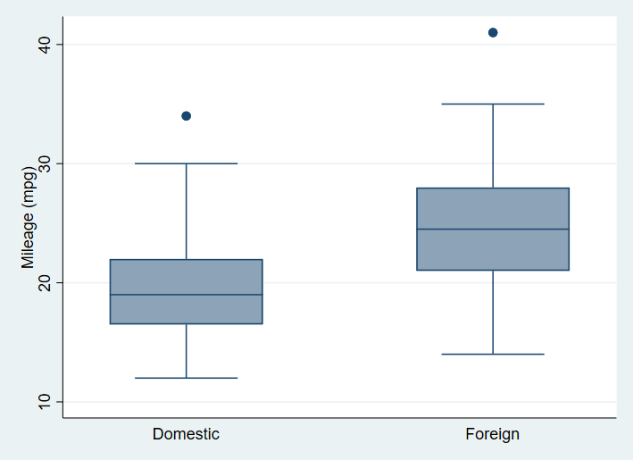
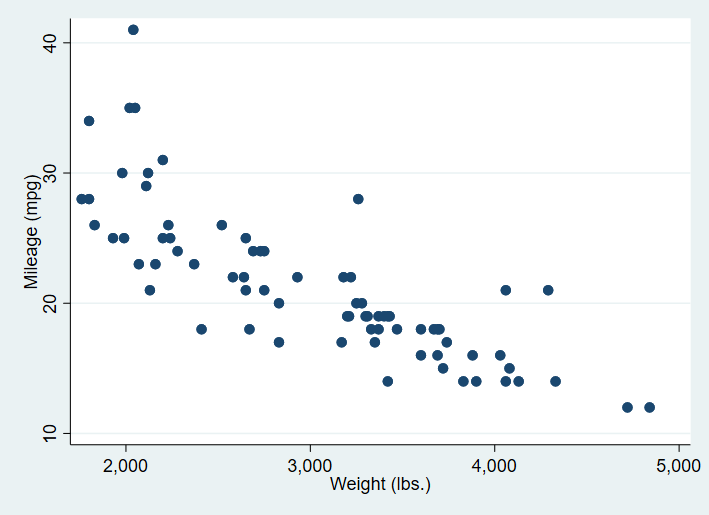

Code
library(Statamarkdown)
knitr::opts_chunk$set(engine.path = list(stata = "C:/Program Files/Stata16/StataIC-64.exe"))Web resources :
(1978 Automobile Data)
Contains data from C:\PROGRA~1\Stata16\ado\base/a/auto.dta
obs: 74 1978 Automobile Data
vars: 12 13 Apr 2018 17:45
(_dta has notes)
-------------------------------------------------------------------------------
storage display value
variable name type format label variable label
-------------------------------------------------------------------------------
make str18 %-18s Make and Model
price int %8.0gc Price
mpg int %8.0g Mileage (mpg)
rep78 int %8.0g Repair Record 1978
headroom float %6.1f Headroom (in.)
trunk int %8.0g Trunk space (cu. ft.)
weight int %8.0gc Weight (lbs.)
length int %8.0g Length (in.)
turn int %8.0g Turn Circle (ft.)
displacement int %8.0g Displacement (cu. in.)
gear_ratio float %6.2f Gear Ratio
foreign byte %8.0g origin Car type
-------------------------------------------------------------------------------
Sorted by: foreign(1978 Automobile Data)
Variable | Obs Mean Std. Dev. Min Max
-------------+---------------------------------------------------------
make | 0
price | 74 6165.257 2949.496 3291 15906
mpg | 74 21.2973 5.785503 12 41
rep78 | 69 3.405797 .9899323 1 5
headroom | 74 2.993243 .8459948 1.5 5
-------------+---------------------------------------------------------
trunk | 74 13.75676 4.277404 5 23
weight | 74 3019.459 777.1936 1760 4840
length | 74 187.9324 22.26634 142 233
turn | 74 39.64865 4.399354 31 51
displacement | 74 197.2973 91.83722 79 425
-------------+---------------------------------------------------------
gear_ratio | 74 3.014865 .4562871 2.19 3.89
foreign | 74 .2972973 .4601885 0 1(1978 Automobile Data)
-> tabulation of foreign
Car type | Freq. Percent Cum.
------------+-----------------------------------
Domestic | 52 70.27 70.27
Foreign | 22 29.73 100.00
------------+-----------------------------------
Total | 74 100.00
-> tabulation of rep78
Repair |
Record 1978 | Freq. Percent Cum.
------------+-----------------------------------
1 | 2 2.90 2.90
2 | 8 11.59 14.49
3 | 30 43.48 57.97
4 | 18 26.09 84.06
5 | 11 15.94 100.00
------------+-----------------------------------
Total | 69 100.00
